ヨーロッパの誕生③（十字軍と"商業の復活"）
11世紀末、農業生産力の向上により国力を蓄えた西ヨーロッパ世界は、外部への膨張を開始します。その最大の動きが、イスラーム世界に対する「十字軍の遠征」でした。遠征自体は失敗に終わりますが、これが契機となって東西の交易が活発化し、「商業の復活」と都市の発展という大きな社会変化をもたらしました。
1. 十字軍遠征の背景と要因
直接のきっかけは、セルジューク朝（イスラーム勢力）の圧迫を受けたビザンツ皇帝アレクシオス1世が、ローマ教会に救援を要請したことでした。
- クレルモン宗教会議（1095年）：教皇ウルバヌス2世が聖地イェルサレムの奪回を呼びかけ、聖戦を提唱しました。教皇の狙いは、ギリシア正教会に対する優位性の確保と、西欧カトリック世界の統合でした。
- 西欧の成熟（内的要因）：11世紀頃の西欧では、三圃制（さんぽせい）の普及や重量有輪犂（じゅうりょうゆうりんすき）などの技術革新、さらには修道院を中心とする大開墾運動によって農業生産力が飛躍的に向上し、人口が増加していました。この余剰エネルギーが外への拡大（十字軍）を可能にしました。
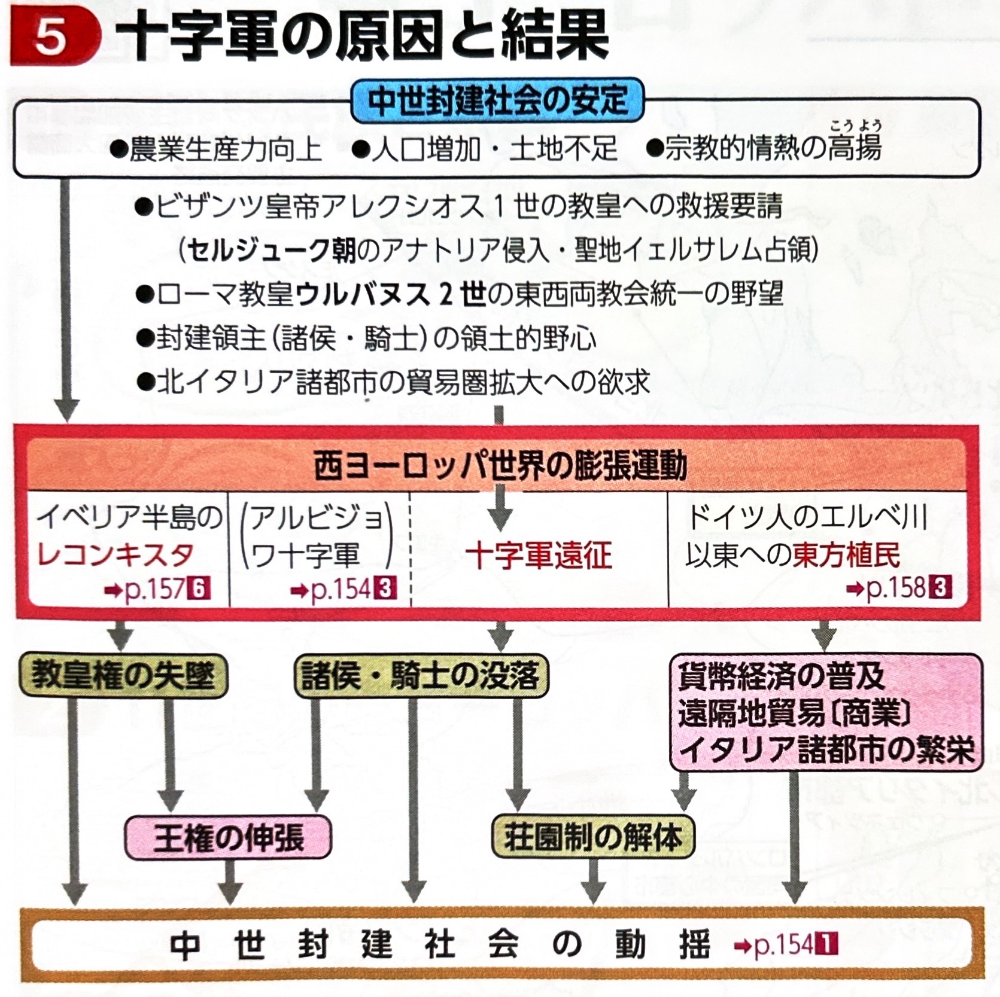
2. 十字軍の経過（1096年〜1270年）
約2世紀にわたって行われた十字軍ですが、最終的に聖地を確保することはできず、失敗に終わりました。
| 回数・時期 | 主な出来事と結果 |
|---|---|
| 第1回 （1096~99年） |
フランス諸侯が中心。聖地奪回に成功し、現地にイェルサレム王国を建設しました。 |
| 第3回 （1189~92年） |
イスラーム側の英雄、アイユーブ朝のサラーフ＝アッディーン（サラディン）が聖地を奪回したことに対抗して起こされました。神聖ローマ皇帝、フランス王、イギリス王（リチャード1世）が参加しましたが、聖地奪回は果たせませんでした。 |
| 第4回 （1202~04年） |
教皇インノケンティウス3世の提唱。商売敵を倒したいヴェネツィア商人の主導により、目的地をそれて同じキリスト教国であるビザンツ帝国の首都コンスタンティノープルを占領し、ラテン帝国を建設しました。（※十字軍の変質を象徴する事件です） |
| 第6・7回 （13世紀後半） |
フランス王ルイ9世が主導しましたが失敗し、彼は第7回の遠征中にチュニスで病死しました。 |
1291年、十字軍の最後の拠点であったアッコンがマムルーク朝によって陥落し、十字軍の時代は幕を閉じました。
（※この時期、聖地巡礼の保護などを目的に、ヨハネ騎士団、テンプル騎士団、ドイツ騎士団などの宗教騎士団が結成されました。）
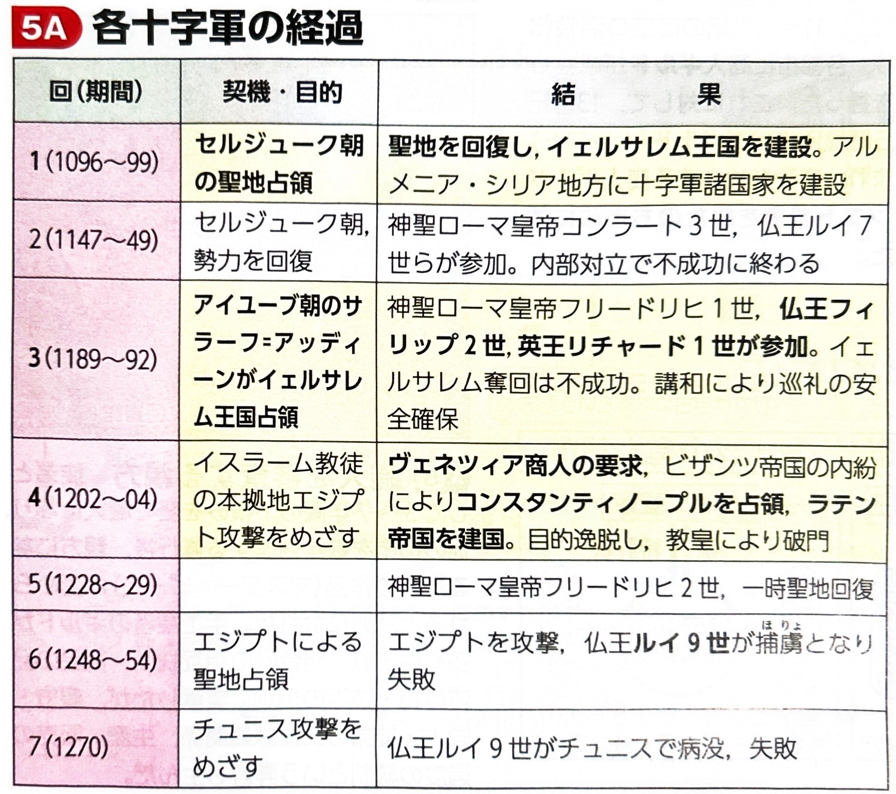
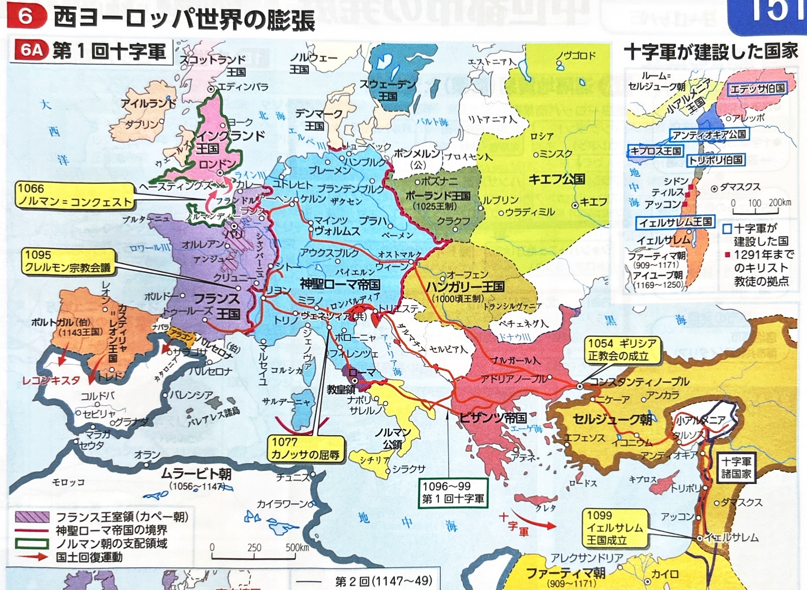
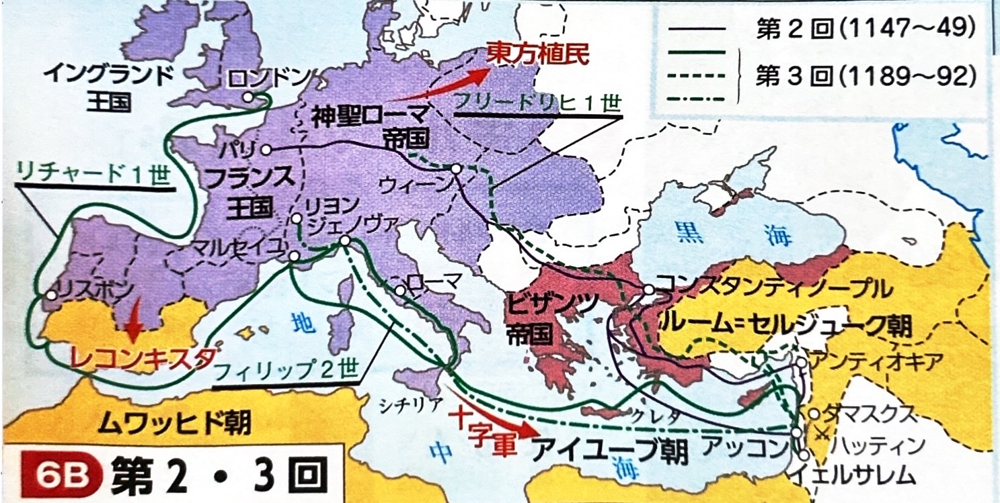
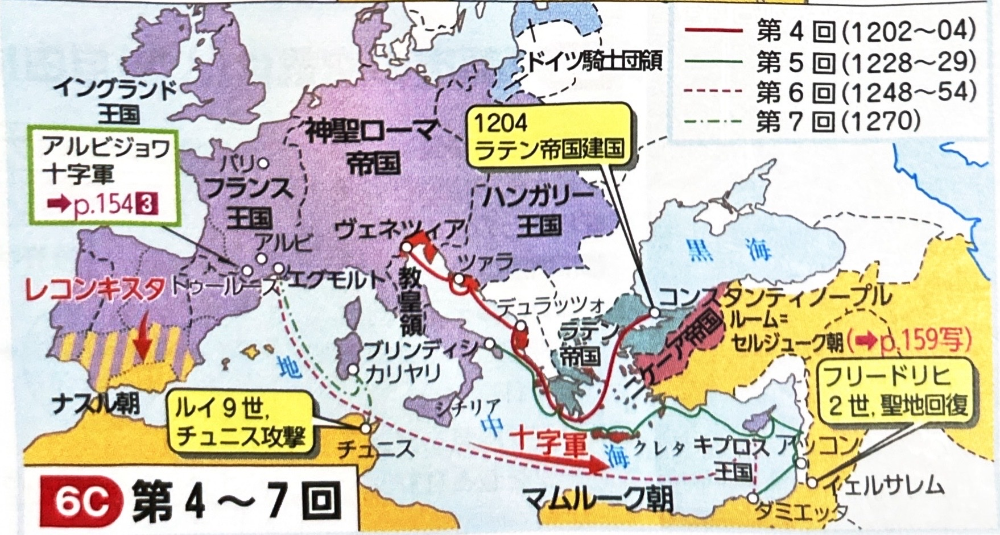
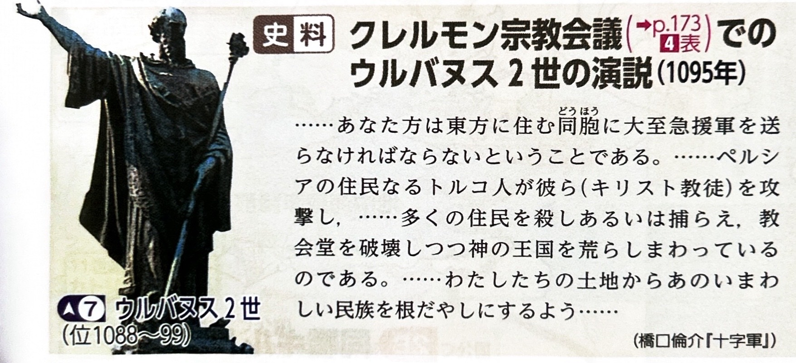
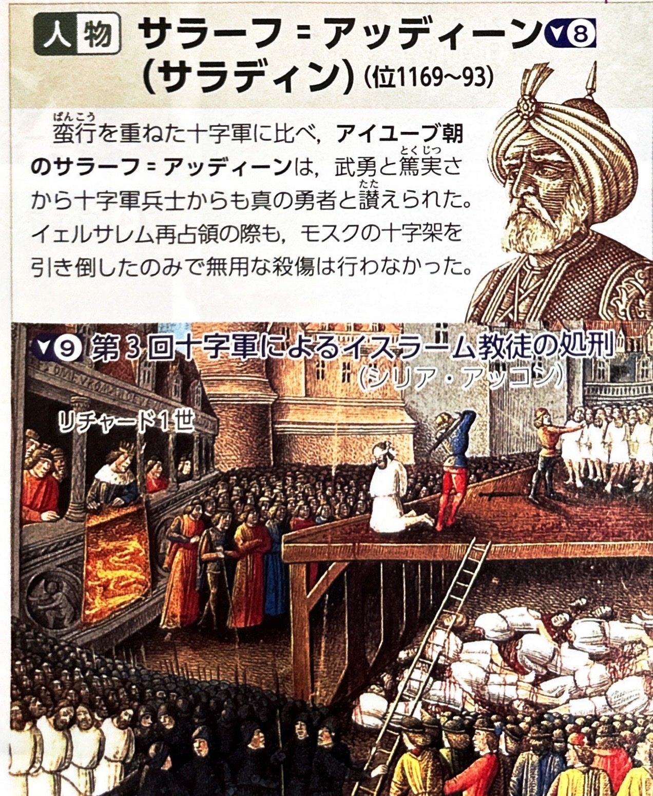
3. 十字軍の影響と「商業の復活」
十字軍の失敗は、西欧社会の構造を根底から揺るがしました。
- 教皇権の衰退：遠征の失敗により、提唱者である教皇の権威が揺らぎました。
- 国王権の伸張：遠征に参加した多くの諸侯や騎士が没落する一方で、国王は彼らを統制下におき権力を強めました。
- 東方貿易（レヴァント貿易）の発展：十字軍の輸送や兵站を担ったイタリア諸都市（ヴェネツィア、ジェノヴァなど）が、イスラーム世界との貿易で莫大な利益を上げ繁栄しました。
【商業の復活（商業ルネサンス）】
農業生産の向上による余剰生産物の交換拡大と、十字軍による東方貿易の発展が結びつき、11〜12世紀にかけて西欧各地で商業と都市が復活しました。
特に、香辛料などの奢侈品（しゃしひん）を扱う南の「地中海商業圏」と、木材や海産物など生活必需品を扱う北の「北ヨーロッパ商業圏」を結ぶ内陸交易の中心として、フランスのシャンパーニュ地方が大いに繁栄し、大規模な定期市（メッセ）が開かれました。
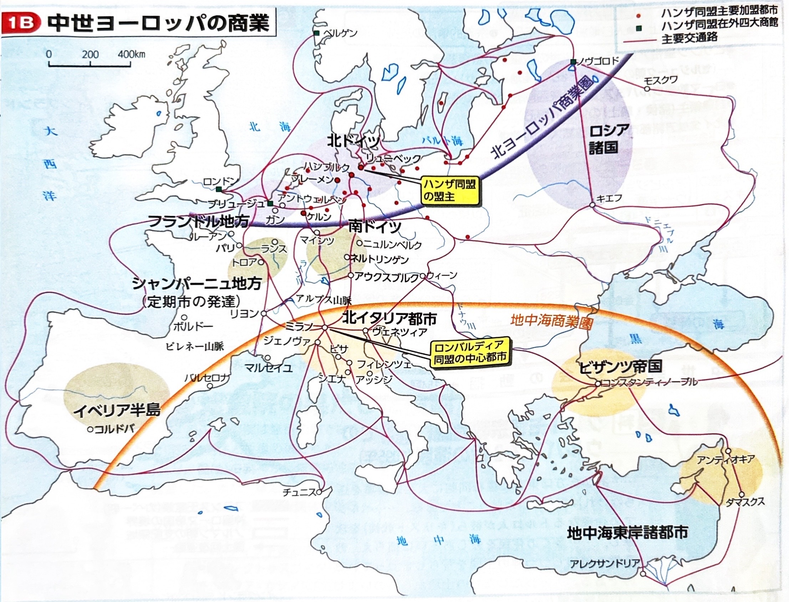
4. 都市の成立とギルド（同業組合）
商業の発展に伴い、交通の要衝などに商工業者（市民＝ブルジョワジー）が集住し、中世都市が成立しました。
- 自治権の獲得：都市の市民は、領主（諸侯）の支配から逃れるためにお金を払ったり戦ったりして、国王や皇帝から特許状を獲得し、自治権を手に入れました。イタリアでは周辺農村も含めた自治都市（コムーネ）が成立し、ドイツでは皇帝に直属する帝国都市（自由都市）が誕生しました。
- ギルド（同業組合）：都市の商工業者は、自由競争を制限し相互扶助を図るためにギルドを組織しました。
- 当初は、貿易を行う大商人による商人ギルドが市政を独占しました。
- その後、商人ギルドの支配に不満を持った手工業者（職人）たちが同職ギルド（ツンフト）を結成し、市政への参加を求めて争いを起こしました。これをツンフト闘争と呼びます。
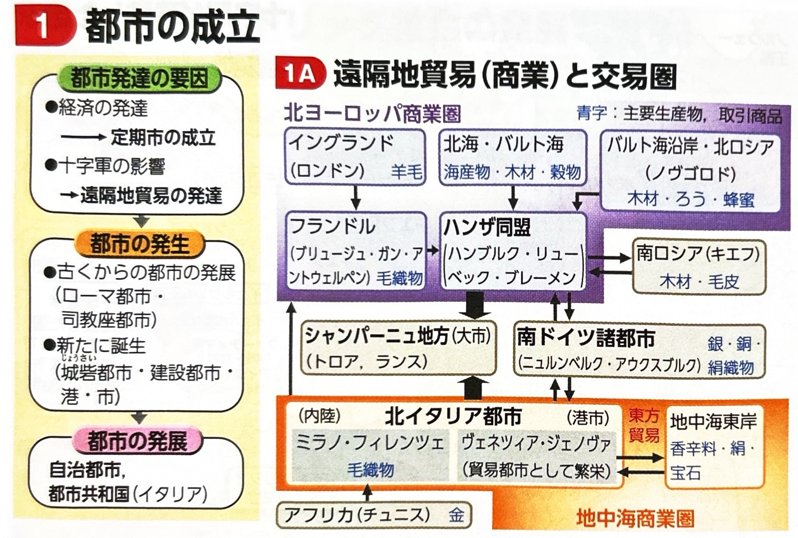
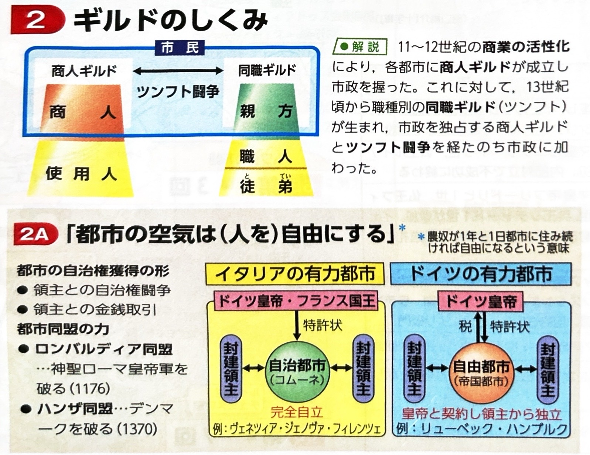
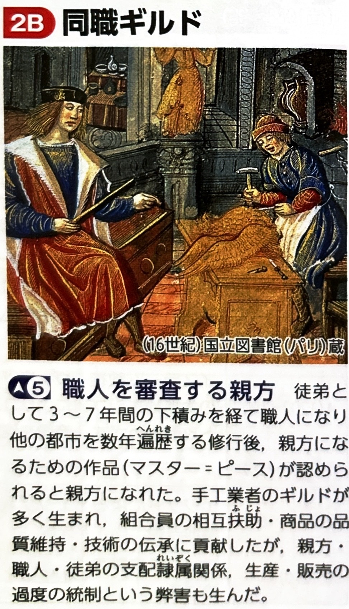
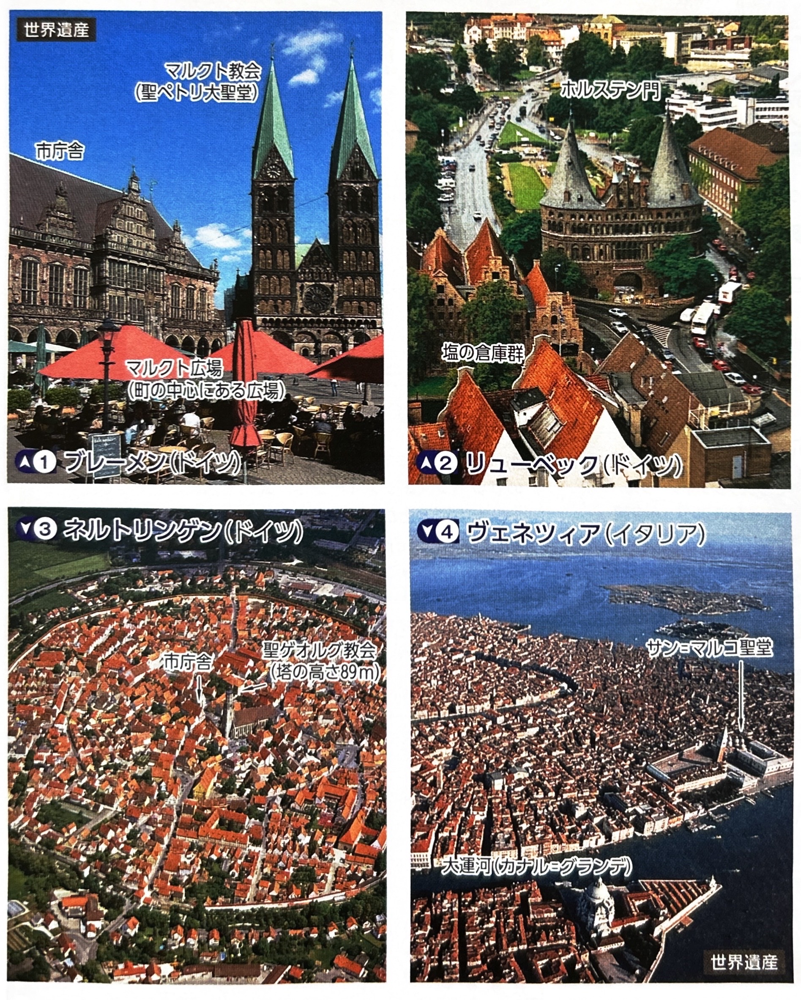
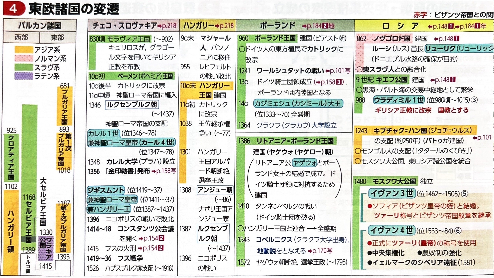
5. 都市同盟と大富豪の台頭
都市は共通の敵や利益のために同盟を結び、やがて国家をも凌ぐ力を持つ大富豪も登場しました。
| 同盟・一族 | 活動地域と特徴 |
|---|---|
| ロンバルディア同盟 | 北イタリアの都市同盟。ミラノを中心に、神聖ローマ皇帝の干渉に対抗しました。 |
| ハンザ同盟 | 北海・バルト海貿易を独占した北ドイツの商業都市同盟。盟主はリューベック（他にハンブルク、ブレーメンなど）。最盛期の14世紀にはデンマークを破るほどの軍事力を持ち、海外に4大在外商館（ブリュージュ、ロンドン、ベルゲン、ノヴゴロド）を置きました。 |
| フッガー家 | 南ドイツのアウクスブルクを拠点とし、銀山の独占経営などで莫大な富を築いた大富豪。 |
| メディチ家 | イタリアのフィレンツェを拠点とし、金融業・毛織物業で栄え、ルネサンスのパトロンとしても活躍した大富豪。 |
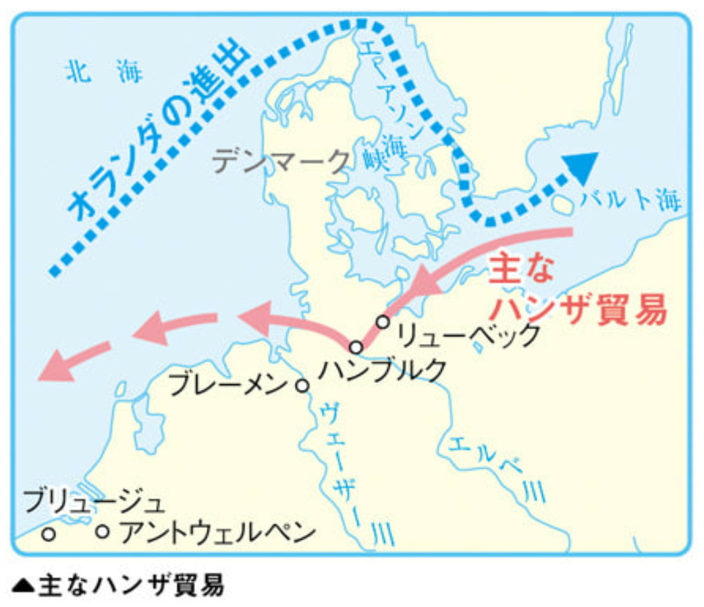
6. 交易ルートの変遷（内陸から海路へ）
造船技術や航海術の進歩により、中世後半から近世にかけて国際交易の中心地は移動していきました。
南北の商業圏を陸路で結ぶ結節点として定期市が繁栄しました。
イタリア商人が、イスラーム勢力圏であったジブラルタル海峡を抜けて大西洋から北海へ至る直接の海路ルートを開拓しました。これにより内陸のシャンパーニュは衰退し、毛織物産業で栄えていたフランドル地方のブリュージュ（現在のベルギー）が新たな国際商業の中心となりました。
15世紀には同じくフランドル地方のアントウェルペン（アントワープ）へ中心が移ります。その後、15世紀末から高い造船技術と航海術を持ったオランダがバルト海へ進出し、ハンザ同盟の独占を打破して衰退させました。17世紀には、オランダのアムステルダムが世界経済の中心（覇権国家）へと成長します。